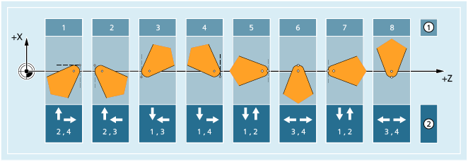
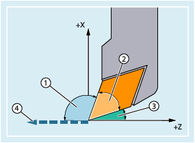

Tool types
The following tool types are available in the "Turning tools" group:
500 | Roughing tool |
505 | Y axis roughing tool |
510 | Finishing tool |
515 | Y axis finishing tool |
520 | Plunge cutter |
521 | Plunge cutter, oblique |
525 | Y axis plunge cutter |
530 | Cutting tool |
531 | Cutting tool, oblique |
535 | Y axis cutting tool |
540 | Threading tool |
541 | Threading tool, oblique |
550 | Button tool / forming tool (TOOLMAN) |
560 | Rotary drill (ECOCUT) |
580 | Probe with cutting edge position parameters |
Tool parameters
The following figures and descriptions provide an overview of which turning tool parameters are entered in the compensation memory:

① | Cutting edge position (1 ... 9) for machining behind the turning center |
P | Tool tip |
S | Cutting edge center point |
R | Cutting edge radius |
T | Tool carrier reference point |
T' | Tool carrier reference point |
L1 | Geometry - length 1 |
L2 | Geometry - length 2 |
L1' | Base dimension - length 1 |
L2' | Base dimension - length 2 |
L3' | Base dimension - length 3 |
Tool parameters | Meaning |
|---|---|
$TC_DP1 | Tool type |
$TC_DP2 | Cutting edge position Turning tools are limited by their main and secondary cutting edges. The cutting edge position describes the position of the main and secondary cutting edge relative to the coordinate axes, that is, the position of tool tip P in relation to cutting edge center point S. For cutting edge position 1 - 4, the primary and secondary cutting edge are in the same quadrant. For a cutting edge position of 5 - 8, the primary and secondary cutting edge are in adjacent quadrants or there is a coordinate axis between the two cutting edges. The cutting edge position together with the cutting edge radius ($TC_DP6) is required for the calculation of the tool radius compensation for turning tools. |
$TC_DP3 | Geometry - length 1 |
$TC_DP4 | Geometry - length 2 |
$TC_DP6 | Geometry - radius (cutting edge radius) |
$TC_DP21 | Base dimension - length 1 |
$TC_DP22 | Base dimension - length 2 |
$TC_DP23 | Base dimension - length 3 |
| |
Tool parameter $TC_DP11: Cutting direction
| Note |
The cutting direction is relevant only in the cutting edge positions 1 - 8. |
Two different cut directions can be assigned to each cutting edge position:
① | Cutting edge position (1 - 8) | |
② | Cutting directions assigned to the cutting edge position: | |
1 | Ordinate - | |
2 | Ordinate + | |
3 | Abscissa - | |
4 | Abscissa + | |
The cut direction is stored in the tool parameter $TC_DP11.
Tool parameters $TC_DP10 and $TC_DP24: Holder angle and clearance angle
| Note |
The tool angles are relevant only in cutting edge positions 1 - 8. |
The following figure shows the holder angle and clearance angle for a turning tool with cutting edge position 3. The machining plane is G18 (Z/X). The cut direction is 3 (negative Z or abscissa direction).
① | Holder angle |
② | Wedge or plate angle = 180° - holder angle - clearance angle |
③ | Clearance angle |
④ | Cutting direction |
The cut direction specifies the reference direction of the holder angle. The clearance angle is the angle measured between the inverse cut direction and the adjacent cutting edge (positive).
Holder angle and clearance angle are stored in the tool parameters $TC_DP10 or $TC_DP24.